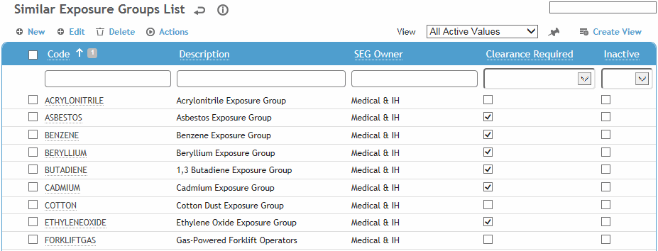
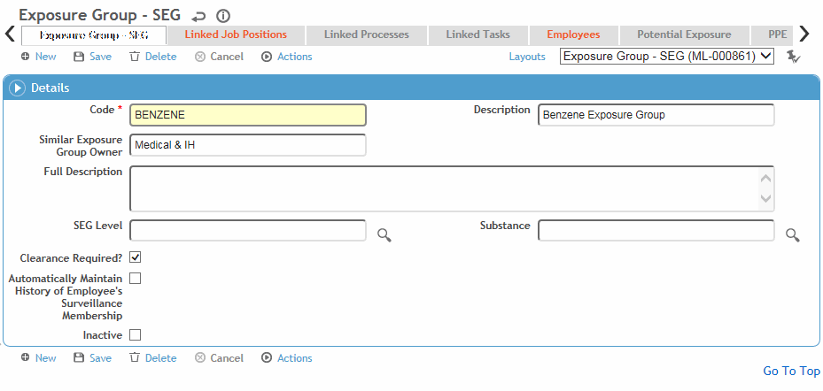
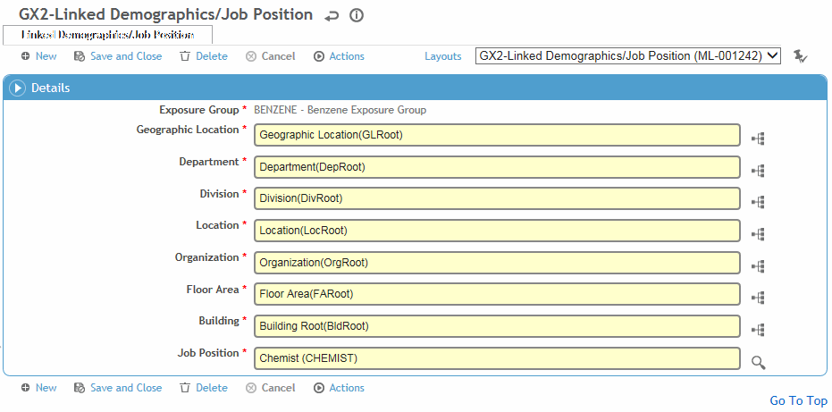
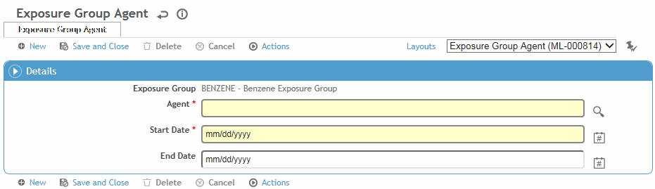
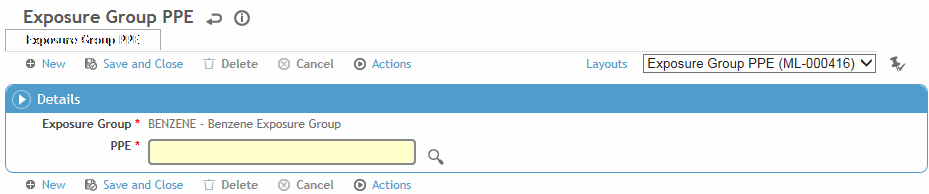

This table contain codes for similar exposure groups (SEG). An SEG is used to group employees who have common surveillance requirements, such as those exposed to the same hazard.
When you deactivate an SEG, you are asked if you want to remove any linked jobs and end any associated active employee enrollments so that requirements for inactive SEGs do not continue to display as due for employees.
The SimilarExposureGroup table is for IH users, and records will automatically be flagged as for IH Use. This table includes the ability to link processes and tasks. Medical users use the ExposureGroup table to create both IH and non-IH exposure groups (the ExposureGroup table includes an IH Use? checkbox).
For quick access to the SimilarExposureGroup table, choose SEG Management from the Industrial Hygiene menu.
To filter the list of records, enter a few characters in one or more of the fields at the top followed by an asterisk, then press Enter.

To create an SEG that is very similar to an existing one, select the SEG and choose Actions»Clone. You are prompted to enter a new code and description for the clone, and to select which tabs to copy from the existing SEG.
Click a link to edit, or click New.

On the Exposure Group tab:
Enter the Code
to be used to identify the SEG as well as a short Description.
You can optionally include more detailed information in the Full Description field; this is only
used for reference, it does not appear anywhere else).
In the SEG Owner field, enter the name of the individual or department responsible for creating the SEG, for example, Industrial Hygiene.
Indicate the SEG Level of exposure and the Agent that the employees are exposed to, and complete the Linked Jobs History tab.
If Clearance is required for this SEG, select the checkbox. Fields for clearance status and effective/expiration dates will be available on the Exam Activities form of the Clinic Visits module.
If you select Automatically Maintain History of Employee’s Surveillance Membership, all employees belonging to that SEG will be added to the Employees tab when you import employees.
To link job positions to the SEG, click New on the Linked Job Positions tab.

By default all possible Job Positions are chosen (i.e. “Any (%)”). If you want to select a particular job position, select it.
Select the appropriate GDDLOFB nodes, then click Save.
A Linked Queries tab may be added to custom layouts
that allows you to enroll employees into an exposure group automatically
based on the result of a linked query. The query can be related to
exposure levels, results of lab work, wellness indicators, etc. An
exposure group cannot have both a linked job and a linked query.
For Cority-hosted clients, enrollment is automatic based on a business
rule that is run every Saturday: the BR will check the status of the
exposure groups that use linked queries; if an employee was enrolled
in an exposure group based on the result of a linked query but they
no longer appear in the results of the linked query, their enrollment
in that group will be ended. If an employee is added to the results
of a linked query for one or more exposure groups, an enrollment in
each group will be started for the employee.
Employees can also be enrolled based on the result of a linked query
through the Import Utility or the Data Integration Utility.
Please contact your system administrator for further information.
Similarly, use the Linked Tasks and Linked Processes tabs to associate tasks or processes to the SEG.
Use the Employees tab to include or exclude an employee from an SEG or work group:
If Automatically Maintain History of Employee’s Surveillance Membership is selected on the Similar Exposure Group tab, then during the next data feed from your Human Resources system, employees are automatically added to the Employee tab of the appropriate SEG record, based on their GDDLOFB and job position found within the HR feed.
If the employee is no longer part of the exposure group, the End Date of the existing record is updated with the date of the HR import feed minus one day.
If the employee is new to the exposure group, a record is added with the employee's number and the Start Date equal to the date of the HR import feed.
If you want to maintain any employees you manually added to the SEG (e.g. if they may not match linked job criteria), select the Excluded from Auto-Link checkbox. If not selected, the employee would be removed during the next HR data feed.
Select an existing employee to edit that employee’s membership, or click New. For more information, see Associating an Employee with an SEG.
In the Linked Jobs and Employees tabs, you are restricted to selecting/viewing records that match your site security.
On the Potential Exposure tab, define agents to which the SEG is exposed. Click New and select the agent and the start and end dates for the exposure.

To define the Personal Protective Equipment (PPEs) that are required by all employees in the SEG, click New on the PPE tab, then select the PPE.

An optional tab, Linked Jobs History, may be added to your layout to maintain a history and average exposure between an employee’s job position, department, etc. and effective date. For more information, see Defining Form Layouts.